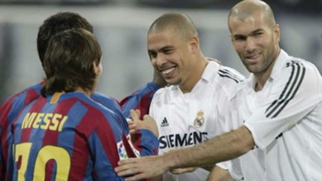

Prácticamente todos los jugadores del mundo quisieran cambiar una camiseta con Leo Messi. Cada vez que termina el partido, todos se acercan al argentino para quedarse con la 10 del Barcelona o de la Selección Argentina. Sin embargo, hubo una vez que fue al revés, una única vez y tiene a Zinedine Zidane como protagonista.
"No soy de pedir camisetas, normalmente las cambio, pero le pedí una vez a Zidane. Si hay algún argentino me la cambio con él, pero, a no ser que alguien me la pida, yo no soy de preguntárselo a nadie, por vergüenza seguramente", lanzó Leo Messi en una entrevista con TyC Sports hace unos años.El partido al que se refiere Leo Messi es a un Clásico Real Madrid vs Barcelona que se jugó en el Santiago Bernabéu durante la temporada 2005. En aquel momento Zidane llevaba el dorsal 5 del Real Madrid y hasta la fecha fue la única vez que Leo Messi pidió una camiseta.
| El día del | Partido | Edad |
|---|---|---|
| Zinedine | Zidane | 47 |
| Lionel | Messi | 32 |